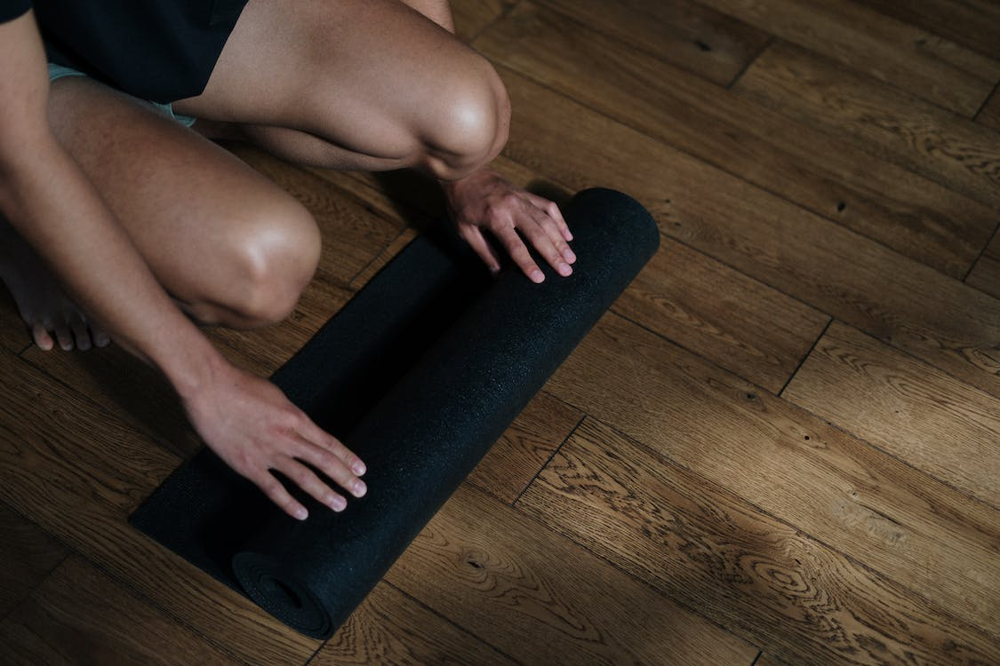

If you want to reap the full benefits of yoga, it’s important to find a way to make it a regular part of your routine
The most important thing to remember when starting a yoga practice (or any new health habit) is that the key to success is doing it routinely. Start small and manageable, says Dr. McCall. Ten or 15 minutes a day of yoga may be more valuable than going to one class a week. “I would rather have a student succeed at doing a one-minute-a-day practice, than fail at doing a five-minute-a-day practice,” says Dr. McCall.
Hopefully, as you begin to see the benefits of your daily practice, however short, chances are you will be convinced to do more.
Yoga can be done at home, but — especially for the beginner — it is important to try a class or two that is taught by a seasoned instructor, in a private or group setting, to be sure you are doing the yoga exercises safely.
Look for an experienced yoga instructor who has at least a 200-hour teaching certificate from a teacher-training program accredited with the Yoga Alliance. Those programs include training on injury prevention. If you have any specific medical concerns, check with a doctor before beginning to see what types of yoga might be best for you.
Look for yoga studios or gyms that provide good slip-resistant mats (if you are planning on renting a mat) and sturdy, clean blocks for support. If you do rent a mat, make sure there is antibacterial spray or cloths available for you to wipe down your mat before and after use.
There are many styles of yoga classes taught today. Some are very physically challenging and will leave you sweating; others are gentle and restorative. Some teachers play music in class; others don’t. Some classes include references to yoga philosophy and spirituality; others don’t.
Here are a few types of classes your yoga studio or gym may offer:
Most yoga styles being taught in America today are a form of hatha yoga, which is a general term that refers to the physical part of yoga, rather than yoga philosophy or meditation. A Hatha yoga class is likely to be a combination of poses and breathing exercises, but it’s hard to know whether it will be challenging or gentle. Check with the school or the teacher to find more about the level of classes that are described only as Hatha yoga.
This is a challenging style of yoga that is centered around a progressive series of yoga sequences that, traditionally, students practice on their own under the guidance of a teacher. If you think that yoga is not a workout, you haven’t tried an Ashtanga class. Classes include advanced poses such as arm balances and inversions including headstands and shoulder stands. Beginner students are strongly advised to study with an experienced teacher. Ashtanga classes will also often include teachings in yoga philosophy.
As its name suggests, power yoga is a challenging style of yoga aimed at strength-building. These classes will include advanced poses and inversions like headstands and handstands that require a lot of strength.
These classes usually consist of a fairly energetic flowing sequence of yoga poses that will include — depending on the level — advanced poses, such as arm balances, headstands, shoulder stands and handstands. Many vinyasa classes have musical accompaniment of the teacher’s choosing.
Love learning about how your muscles and joints work together? This is the yoga for you. Iyengar yoga focuses on the precision of your yoga poses. Iyengar classes are known for their use of props, including blankets, blocks, straps and bolsters, to help students do poses that they wouldn’t be able to do otherwise. Classes can also include ropes that are anchored to the walls to do inversions and other poses. They also tend to include breathing exercises and references to yoga philosophy.
Like the heat? Bikram yoga is a set series of 26 poses performed in a room heated to 105 degrees, which is said to allow for deeper stretching and provide for a better cardiovascular workout. Unlike most yoga classes, Bikram classes are always done in rooms with mirrors. Hot yoga refers to any yoga class that is done in a heated room — generally from 80 to 100 degrees.
If you are looking for a little more relaxation from your yoga class, restorative yoga is for you. This yoga style usually involves a few restful poses that are held for long periods of time. Restorative poses include light twists, seated forward folds and gentle back-bends, usually done with the assistance of many props, including blankets, blocks and bolsters.
Looking for a new kind of stretching experience? Yin yoga is aimed at stretching the connective tissue around the pelvis, sacrum, spine and knees to promote flexibility. Poses are held for a longer amount of time in yin yoga classes, generally from three to five minutes. It is a quiet style of yoga, and will quickly show you how good you are at sitting still.
Note: It’s a good idea to try several yoga classes. How much you enjoy any class will come down to how much you like the teacher, not how it’s labeled.
Yoga students are expected to be on time to class and respectful of one another. Crowded classes can mean that students will be aligned mat-to-mat, so don’t assume that you will have a lot of room around you for personal belongings. Most yoga classrooms have shelves for your valuables, drinks and other personal items. Remember to turn your cellphone off before class.
For Bikram or hot yoga classes, bring a towel. You are going to sweat, and it will help prevent slipping.
Classes usually begin with a brief introduction by the teacher that may include a focus or theme for the day, such as backbends or particular poses, and then the teacher often will instruct the class to chant the word “Om” together. (Om is a Sanskrit term that connotes the connectivity of all things in the universe.)
To “Om” or not to “Om”? There is no obligation to chant, but you should at least remain quiet during that time.
Some breathing techniques taught in yoga classes are meant to be loud and others are not. Students should take cues from the teacher.
If you have to leave early, try to tell the teacher ahead of time, and, if you can, position yourself near the back of the room and leave before the relaxation period at the end of class.
A note to the over-achiever: Trying too hard often leads to injury. Being aware of your physical limitations and when you need to modify a pose will be more beneficial to your body than reaching to be the most flexible or strongest in the class.